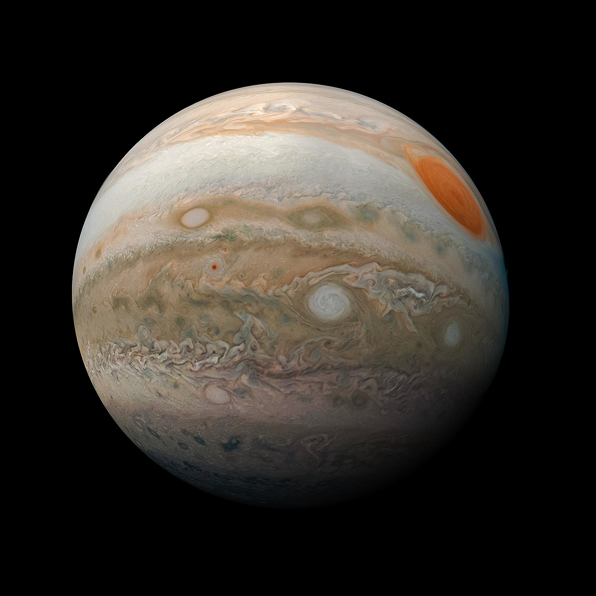

| Lunes | 10º Nubes |
| Martes | 12º Nubes |
| Miercoles | 12º Nubes |
| Jueves | 15º Sol |
| viernes | 15º Sol |
| Sabado | 12º Lluvia |
| Domingo | 12º Lluvia |
| Día de la semana | Temperatura media | Estado general |
|---|---|---|
| Lunes | 10ª | Nubes |
| Martes | 12ª | Nubes |
| Miercoles | 12º | Nubes |
| Jueves | 15ª | Sol |
| Viernes | 15ª | Sol |
| Sabado | 12º | Lluvia |
| Domingo | 12ª | Lluvia |
| Día | Mañana | Tarde |
|---|---|---|
| Lunes | Juan | Pedro |
| Martes | Luisa | María |
| Miercoles | Andrés | Juan |
| Jueves | María | Luisa |
| Viernes | Pedro | Andrés |
| Planeta | Masa | Distancia al sol |
|---|---|---|
| Mercurio | 0.06 | 57.910.000 |
| venus | 0.82 | 108.200.000 |
| La Tierra | 1.00 | 146.600.000 |
| Marte | 0.11 | 227.940.000 |
| Júpites | 318 | 778.330.000 |
| Saturno | 95.1 | 1.429.400.000 |
| Urano | 14.6 | 2.870.990.000 |
| Neptuno | 17.2 | 4.504.300.000 |
| Las masas son relativas a la tierra | ||
| Imagen | Datos | |
|---|---|---|
|  | Distancia desde el sol: | 778,5 millones km |
| Radio | 69.911 km | |
| Gravedad | 24,79 m/s² | |
| Masa | 1,898 × 10 27 kg | |
| Superficie | 61,42 miles de millones km² | |
| Duración del día | 0d 9h 56m | |